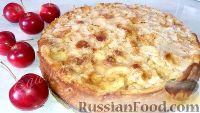
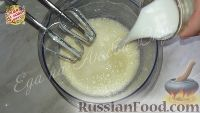
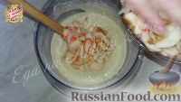
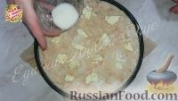
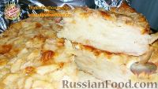

Это, пожалуй, самый яблочный пирог, который я ела. Вкус у него потрясающий, настоящий – яблочный! Текстура сочная, нежная и ароматная. Рецепт совершенно простой, из доступных ингредиентов. Cоветую приготовить и оценить!
| Размер пирога | Яблоки | Мука | Яйцо | Сахар | Молоко | Разрыхлитель | Корица | Масло сливочное |
| Маленький | 0,5 кг | 85 г | 2 шт | 100 г | 50 мл | 1,5 ч. л. | 0,25 ч. л. | 15-25 г |
| Средний | 1 кг | 170 г | 3 шт | 200 г | 100 мл | 1 ч. л. | 0,5 ч. л. | 30-50 г |
| Большой | 1,5 кг | 255 г | 5 шт | 300 г | 150 мл | 1,5 ч. л. | 0,75 ч. л. | 45-75 г |
| Очень большой | 2 кг | 340 г | 6 шт | 400 г | 200 мл | 2 ч. л. | 1 ч. л. | 60-100 г |
Взбиваем яйца с сахаром (150 г), вливаем молоко.
Смешиваем с просеянной мукой, разрыхлителем и корицей. Добавляем тонко нарезанные пластинками, очищенные яблоки.
Выкладываем в хорошо смазанную форму, сверху на тесто кусочки масла и сахар (50 г).
Печем яблочный пирог при 180 градусах, 50-60 минут.
Яблочный пирог готов. Приятного аппетита!
Открыть страницу сайта с рецептами в новой вкладке